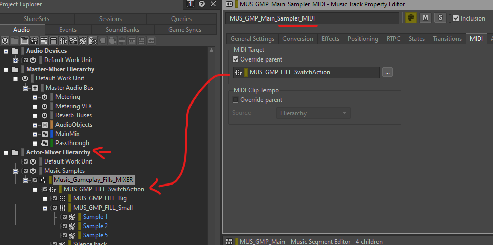

This is a component of an interactive music implementation used on an unreleased project, resulting from its gameplay structure and the breakbeat/bruk style that we were exploring. The goal was to have the capability to play random samples on the beat, and not a virtual instrument being driven by a MIDI track. It should serve the player fantasy and complement the generative style of the visuals we had at the time.
{kind=link}
The Audio team and myself devised a set of rules for when to emphasise player actions and rewards with music. The idea was to have traditional layers coming in and out relying on an Intensity (or "coolness") value, but with every action used to make this value go up also posting events playing samples on the beat.
(disclaimer: this video shows functionality and the audible result shown here is less complex and less qualitative than what was cut and mixed together at the time. Original composed content is under NDA)
The nature of bruk music makes this easy as the beat loops are constantly being layered, while samples punctuate the track. The particularity of this setup is the use of a short MIDI note file repeated every beat in the music container, targeting a Switch container in the Actors Mixers hierarchy.


By default, the Switch value plays a silent sound. But when an action gets rewarded with a sample, the Switch value shifts to a "small" or "big" sample, then back to the default value.
Time delays are based on bar divisions and the music tempo, managed in milliseconds. The goal is to have the Switch value calling a sample to play on the next single beat, but not before, and not after (and get two samples with one event trigger).
As seen in the video, traditional stingers were used for very big gameplay events that raised our Intensity score by a lot. Overall it is forcing Wwise into a sampler tied to its Music tick, and it can be a bit challenging to iterate on as a change in tempo, number of bars within music segments or the amount of segments and containers require manual editing using the now dated Music timeline editor. The advantage is that it is easy to build upon and around it using Wwise's music tools (tracks types, transitions, filters following RTPCs etc) and mixing to expand and fine tune the experience.
On the Engine side (here Unreal engine), collaboration with Code allowed for custom nodes to call Data Assets compiling different set of options for the Intensity score.
Adding these nodes alongside other sound events and parameter implementation made it really flowing and linked with the rest of the game’s Audio logic, but also made it integrated with other logic for a very controlled system within the gameplay loops. The Intensity value follows a Curve Asset and while the player action makes the value go up or hold, time is what makes the value go down. Some options shown here included different types of actions on the Intensity value (increase, hold or both), a hold time and a limit to avoid some actions being spammed and increasing the Intensity level too artificially.